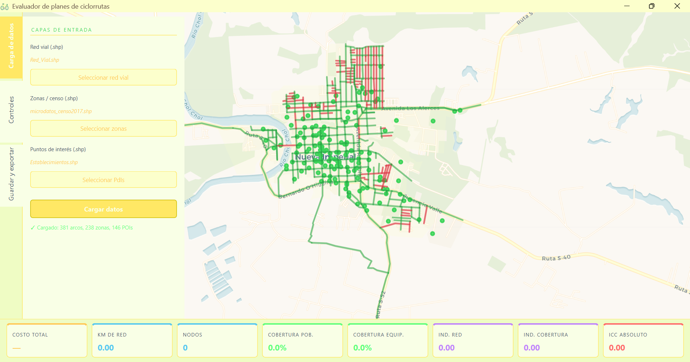
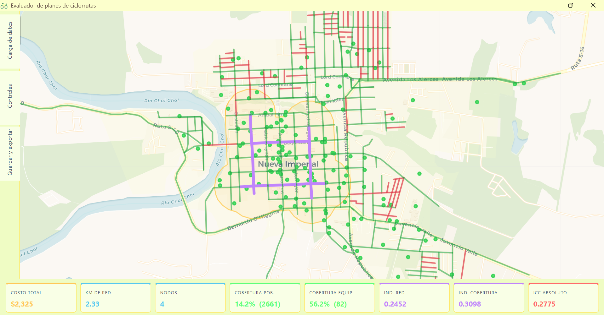

Herramienta especializada para evaluar planes maestros de ciclorrutas urbanas. Tras cargar la información necesaria, permite trazar diversas configuraciones de red y evaluar el desempeño de los indicadores espaciales de forma automática e instantánea.

